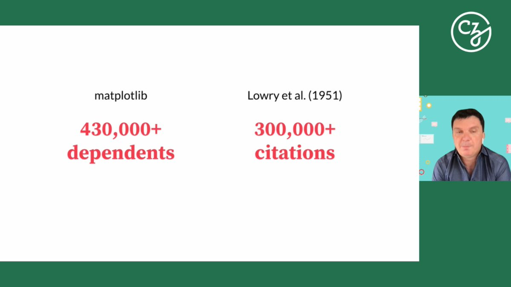
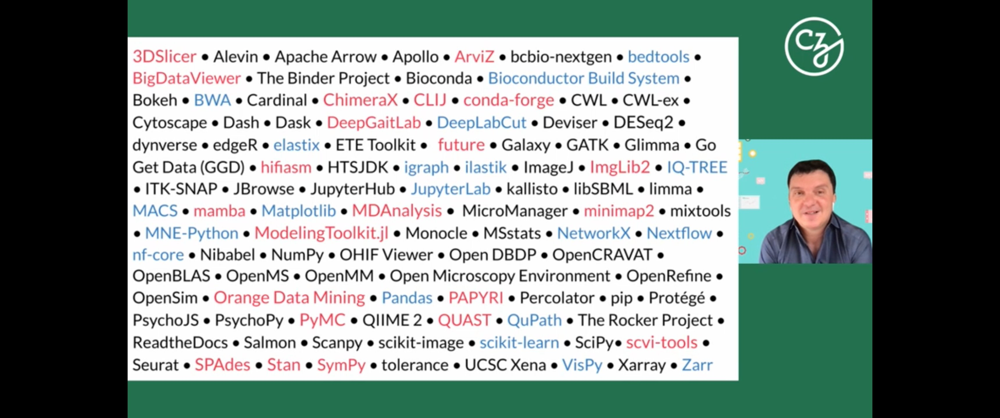
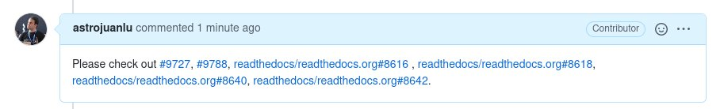
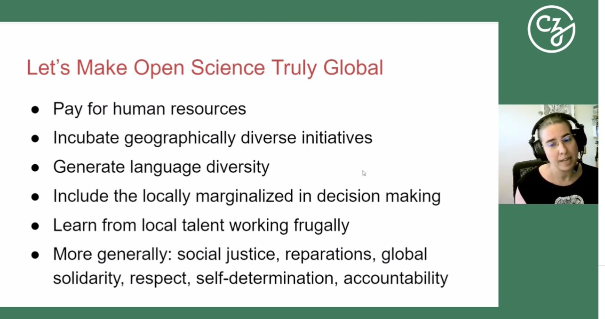
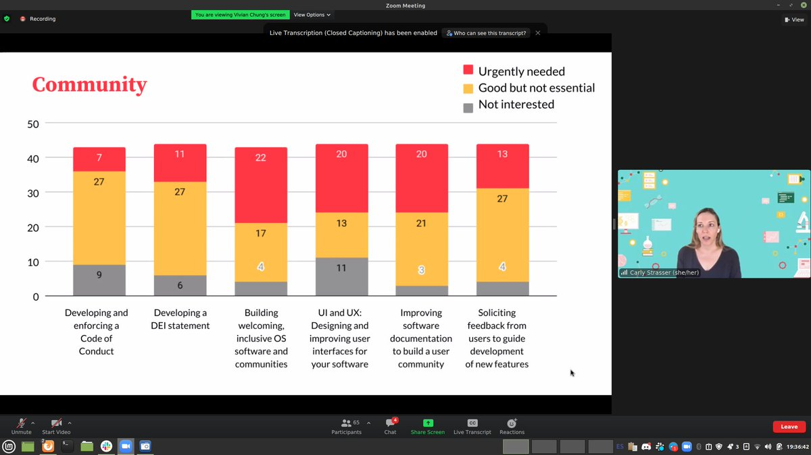
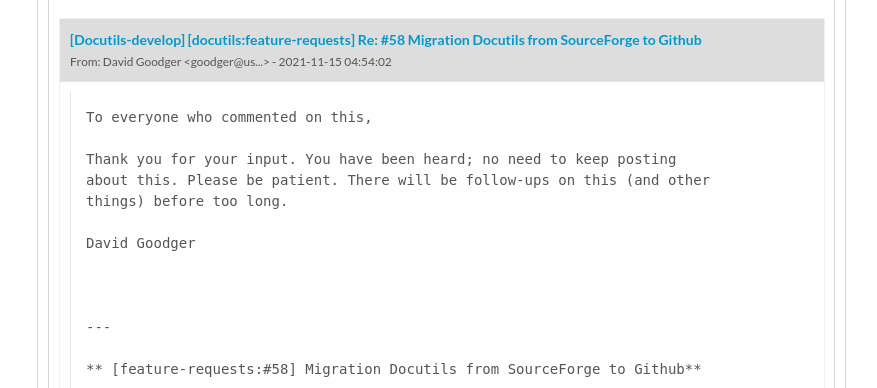
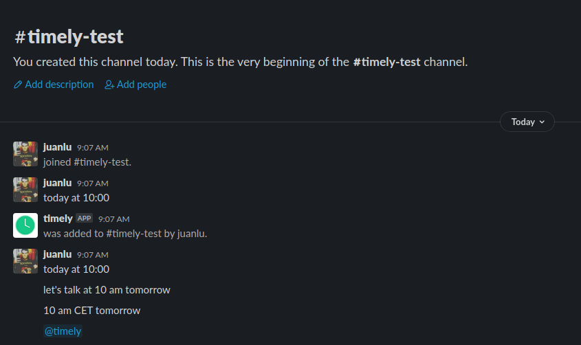
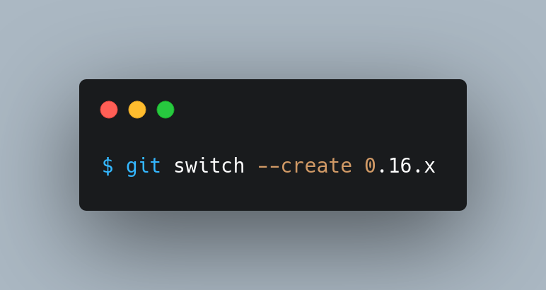

I evaluated several alternatives for @readthedocs and we're now using @MailerLite + @MailerCheck . Totally recommended!
Replying to @NKondjashili, @choldgraf, @readthedocs, @MailerLite and @MailerCheck
For us Mailchimp was broken and their support team couldn't solve our problems, on the other hand @MailerLite does exactly what we need, the interface works, and our readers are getting our emails, which is the most important thing!
Replying to @brunosan
I'm reading this book as well, it's being so illuminating!
RT @underdarkGIS: MovingPandas v0.8 released! http://anitagraser.com/2021/11/01/movingpandas-v0-8-released/
Congratulations @fortranlang ! https://twitter.com/fortranlang/status/1445082459033387013
RT @poliastro_py: Our @NumFOCUS grant proposal was accepted, lots of work during the Global Trajectory Optimization Competition, upcoming #…
I confess that I am much more excited about Rust + Python bindings than about Julia! https://twitter.com/steveklabnik/status/1454953847080853506
Replying to @gilgamezh
Because interoperability is much more straightforward: PyJulia requires the Julia executable and is fraught with limitations (doesn't support statically linked CPythons, e.g. conda and Ubuntu https://pyjulia.readthedocs.io/en/stable/troubleshooting.html#your-python-interpreter-is-statically-linked-to-libpython) whereas PyO3 + maturin create CFFI extension modules.
Replying to @gilgamezh
This kind of makes sense because Julia mission is to "solve the two-language problem". Whether that's reasonable or not is another debate, but it's understandable that they see downstream interoperability as a second-class citizen. It interfaces very well with C and Fortran tho.
Replying to @paulweveritt and @pradyunsg
And what was the culprit? We didn't inspect your issue in depth in the end 😅
"A semi-serious comparison", but a powerful one. @ReaderMeter praising the sheer impact of @matplotlib ğŸ‘🼠#EOSSmtg

RT @LeahAWasser: dependency "use" of @matplotlib vs the most heavily cited paper. We need to ensure credit for #opensource tools #EOSSm…
RT @notjustmoore: Amazing list of projects to be brought together at #EOSSmtg! ğŸ‰

Completely speechless during @trklou profound talk at #EOSSmtg. Amazing that open-source software and hardware can reach places like the Gaza strip. But at the same time, it's infuriating that these places are under attack and blockades. Software won't fix that. #FreePalestine
RT @melissawm: A powerful reminder from @trklou about the real world for so many of us - open science needs to reach beyond rich countries
RT @celeste_horgan: Thoughts from trawling the CNCF ecosystem, approving PRs:
The key docs problem in young open source projects is qualit…
Current status:

Replying to @DegenerateConic
Spicy memes are the best memes 😂 https://twitter.com/DegenerateConic/status/1455301940477370372
Replying to @DegenerateConic
Fortran will always be my favourite, but I got burned years ago by lack of modern Fortran support by open-source compilers on Windows, bugs in f2py @numpy_team , and more. All the new activity around LFortran and @fortranlang is super exciting though, maybe I'll go back someday!
RT @matplotlib: Please cite us! https://matplotlib.org/stable/citing.html?highlight=cite
Replying to @juanluisback
Update: @fperez_org has communicated a path forward, see last comments 😍
Replying to @melissawm
I can attest that you are great at it! Every time I land in a videoconf and you're there, I think "Melissa is here, everything is going to be all right". Thanks for all the work you do, you're awesome 🙌🏼
Replying to @mauriciojr and @melissawm
And it's true. Glue work enables folks to execute - it's so essential, yet so invisible.
😍😍😍 At long last! https://twitter.com/PamphileRoy/status/1455788919807778818
Replying to @esc___
I think it was a good decision! At the beginning of the pandemic I saw lots of people saying "nah, you know what, who needs in-person events anyway, traveling produces CO2, bla bla".
In-person matters a lot.
RT @readthedocs: Have you experienced build failures on your documentation recently, in the form of cryptic errors referencing Sphinx and d…
Super excited about watching the upcoming panel "Building situated communities of practice for Open Science in Latin America" at #EOSSmtg with @fperez_org , @goanpeca, and @_lacion_ 👏🏼
RT @AdamChainz: Very exciting. Django will be adopting Black in the new year, as DEP 8 declared we will use the first stable release.
Replying to @juanluisback
Lots of gems in @_lacion_ talk.
"Why do we need trilingual? Most Latin America speaks Spanish and Portuguese. But if we don't speak English, we don't exist in the map" #EOSSmtg
RT @LeahAWasser: make #openscience truly global @_lacion_ super powerful talk this morning at #EOSSmtg

Replying to @juanluisback
Lots of the problems mentioned by @goanpeca resonate with things I see in Spain. "With lack of PhD opportunities, people migrate to Data Science" #EOSSmtg
RT @abbycabs: "I got tired to conferences, community building -- it's just too much. It's all volunteer work and it was too much at this po…
What organization is doing for climate science research what @cziscience is doing for biomedical research?
Replying to @story645
I think "we" (folks tweeting about open source scientific software) are in a bubble to a certain extent. Survivorship bias might be at play (i.e. folks that procrastinated on software that wasn't impactful or successful are invisible).
Lots of good conversations today at #EOSSmtg about lack of awareness of Research Software Engineering in the Spanish-speaking world, motivations to contribute to open-source, and more. Exhausted but happy! See you all tomorrow 👋🏼
What do you do the first time you discover someone you don't know has blocked you on Twitter?
Replying to @pganssle
This is the answer I needed :D
RT @ScipyLA: Informamos que el plazo de envÁo de actividades se ha ampliado hasta el 12 de noviembre de 2021.
¿Trabajas con Python cientÁfi…
Replying to @goanpeca, @ScipyLA, @_lacion_ and @metadocencia
¡Con Python cientÁfico y con R también!
Replying to @PabloPerezA and @kamromero
The European Council is what sets the agenda. "Wednesday! Uh, no -- let's do Thursday morning!" 😉 @beppe_grillo https://youtu.be/KnthcaB1-CA?t=280
Not too many votes, but seems like I'm not the only one with mixed feelings :) https://twitter.com/juanluisback/status/1454382266134765592
Replying to @communimeme and @rosiesherry
Because @discord is objectively better almost by every measure than @SlackHQ for community building 🙃
- Unified identity model (no need to create a zillion accounts)
- No hoops to have self-invites
- More fine-grained roles
- Better moderation tools
And I could go on!
Replying to @choldgraf, @communimeme, @rosiesherry and @discord
Yep, absolutely! We use @discord extensively at https://hablemospython.dev/, and there's several levels of "management". @PythonDiscord has +272k members (yes, 2.7e5, see https://stats.pythondiscord.com/), and there's also @OrbitModel, @MentoredSprints, https://www.onearmy.earth/, @thepine64...
Replying to @choldgraf, @communimeme, @rosiesherry and @discord
I mean, I'm on the "use @matrixdotorg, it's decentralized and fully open-source" camp. But, as a product, I think @discord got many things right. Slack, after all, is a chat for closed groups (companies), and now they're trying to catch up.
Replying to @choldgraf, @communimeme, @rosiesherry, @discord and @matrixdotorg
(And in any case, there are @matrixdotorg bridges for virtually everything these days, and they work quite well)
Replying to @tunguz
Why isn't this the default of @pandas_dev ?
Replying to @choldgraf, @communimeme, @rosiesherry, @discord and @matrixdotorg
Yep, there are some rough edges around @element_hq . I'm used to it now, but it's not as slick as it could be.
Not a great deal, but I figured I'd share this here: stepping down as @astropy.coordinates co-maintainer https://github.com/astropy/astropy.github.com/pull/452#issuecomment-961131035
"The leaky contributors pipeline" is that, sometimes, life gets in the way 😢 Hope I can make cool stuff with @poliastro_py for a few more years!
Replying to @choldgraf
❤️
Replying to @LibertiesEU
Where's the full report for the tracing apps?
Replying to @esc___ and @mfcabrera
Yes pleaseeeeeeeeeeeeeeee 😍😍😍
Replying to @jl_sastre
Bofetón, ¿y qué? Mañana a seguir publicando tonterÁas de la Ánclita. Publicidad gratuita, leña al mono, y mientras el Frente Popular de Judea llamando disidentes al Frente Judaico Popular.
Las noticias aburren. Rara vez se habla de lo importante.
Replying to @DataUmbrella and @pganssle
❤️
I only block people when they look to me like massive assholes or very harmful. So I was afraid of having said something extremely harmful or disappointing to someone.
But of course, everybody has their own rules.
Q: How do we get more CZI's?
R: Taking over existing organizations.
Wisdom from @gvwilson at #EOSSmtg
Replying to @rabernat and @ChanZuckerberg
Yes! https://twitter.com/juanluisback/status/1455962311970152449
RT @rabernat: We need a @ChanZuckerberg for Climate Science:
A mission-driven non-profit that can work with both academia and industry in…
"Improving software documentation to build a user community" considered "Urgently needed" by almost half of @cziscience survey #EOSSmtg

RT @melissawm: I'm curious for metrics around open source communities (repeat contributions, engagement, participation/responding to issues…
RT @melissawm: 🚨 A MEETUP TO TALK COMMUNITY? 🚨
Thinking of ways of connecting folks who work with community building, managing and growth…
Replying to @melissawm
Yes!!! 😍
During #EOSSmtg, Matthew Brett said "I'm concerned that these projects tend to attract weird individuals that are willing to sacrifice lots of things to work on open source".
Well, I'm 2 hours late for a coffee with friends because I'm debugging an issue...
...and I like it 😳
Replying to @HCAcornTech, @communimeme, @rosiesherry, @discord and @SlackHQ
Yeah, it's been taken over by crypto bros and web 3 "communities". Unavoidable, I guess...
Replying to @ralfgommers, @yuvipanda, @communimeme, @rosiesherry, @discord and @SlackHQ
Closed & Semi-closed = Slack works better, I totally agree. And also your point about having some privacy sometimes.
RT @condaforge: conda-forge finally has CUDA-enabled packages for both @tensorflow and @pytorch! Read more about our journey there: https:/…
RT @ralfgommers: Happy that we finally got rid of @dependabot in NumPy. The level of spam PRs it generates, and those issues being ignored…
RT @AlterMundiNet: 📡 #LibreRouter es un proyecto que contempla el desarrollo de #softwarelibre y #hardware de código abierto enfocado en la…
RT @OpenRCommunity: Whereas Ebola handling has been likely hampered by closed access to research results, during the COVID-19 pandemic, Ope…
Replying to @poppacalypse, @rosiesherry, @edmundamoye and @Restreamio
Also @streamyardapp
RT @poliastro_py: > The mediumÂ-sized asteroid 2019 XS will have a close encounter with Earth on 9 November 2021. The asteroid is the subje…
RT @jmayer: With many folks getting new computers this time of year, it is worth remembering:
#Homebrew #Python is not for you. 🐍
https:/…
MyST is great! If you are familiar with reST, you can see how reST gets translated to MyST in real time here https://mystyc.herokuapp.com/
Complete docs: https://myst-parser.readthedocs.io/ https://twitter.com/jmayer/status/1457762490939584513
Replying to @ifndef_define, @tgamblin, @quansightai and @QuantStack
I have made this mistake quaint a few times
RT @readthedocs: We completed the Read the Docs tutorial, deployed some quality of life improvements on the platform, and more: read our No…
Replying to @anthonypjshaw
Since Pyjion seems to be focused on numerical workloads, it would be cool to compare it against @numba_jit in the benchmarks as well!
Replying to @choldgraf and @reydelhumo
😠will give this a try today!!
Replying to @TreciaKS
Teach programming to novices. A deeply humbling experience.
Also, give talks! Public speaking skills are important too
Replying to @eramirem
💔
RT @fishnets88: I've said it before and I'll say it again ... ipywidgets are such a grand feature.
Want to compare distances between two…
RT @chadwhitacre_: Rounding up a few "Open-source alternative to _________" SaaS companies:
@glimesh — Twitch
@PlausibleHQ — Google Analyt…
Replying to @choldgraf and @reydelhumo
Works beautifully! Blog post soon 🚀
Replying to @palewire and @ProjectJupyter
At first I though this was already available, but then I realized it was `jupyter nbconvert --to notebook --execute notebook.ipynb`. Much simpler!
Replying to @palewire and @ProjectJupyter
If I recall correctly, yes. More details here https://nbconvert.readthedocs.io/en/latest/execute_api.html
Replying to @juanluisback
T̢͓̽ÿ̤́͠ p̯̉͝e͖ͫ́E̛̬̊r̻̄͜r̶͈ͫo̢̪͑r̩̋̕:̛̤ͦ ̷̝ͮ'̴͍͋g͉̓̀eÍ“ÌšÌ•Å„Ì¼Í e̵̻͆rÍ™ÌšÍ Ã¤Ì¡Í™Ìt͕ͤ͜ǫ̙̋r͔̒͜'̢̞̐ ̢̦͐o͙ͮ͜ḃ̨̗j̢͈͗ḙͪ͢c͍̋͡t̪ͮ͘ ̦ͪ͢i̴͕͑s͈ͣ͟ ̢͕ͪn̷͖ͤő̧̗t̵̮ͤ ̬̇͘rͤ͞ͅe̴͈̚v̸͇ͪê̕ͅr̵͓̋s̮ͪ͘i͍ͩ͠ bÌ Ì‚ÍŸl̢̜̓e͓̔͘
RT @readthedocs: It is always a pleasure to work with the @ExecutableBooks team! We are excited about Jupyter Book projects finally being s…
RT @bryanl: Your company has a poor documentation culture. Things are slow because people don’t know how things works. Managers start micro…
Replying to @psychemedia
Classic EEE?
Replying to @a1varo_lopez
¿Cada vez más? #citationneeded
RT @FrancescAlted: Després del parèntesi pandèmic, em complau anunciar que el grup de Python Castelló anem a reunir-nos el proper divendres…
Replying to @wstein389
Wow, 17 years ago... Time flies! Sage was my first exposure to Python back in 2010. First Google page for "free alternative to mathematica", the rest is history. My life wouldn't be the same without it!
RT @metasj: @CaulfieldTim @SuzanneMSmalley @insidehighered @bubela_tania @rschon The most harmful misinformation is that which passes peer-…
Replying to @chadwhitacre_, @getsentry, @anajsana95, @jsmanrique and @Bitergia
🛎️
RT @OfficialLoganK: Breaking: New #GSoC 2022 Program updates:
- Eligibility: Anyone 18+, no longer just students
- Program Length: Flexibl…
ğŸ‘ğŸ¼ğŸ‘ğŸ¼ğŸ‘🼠https://twitter.com/python_es/status/1458697610387243008
Super cool use of PEP 517 by the one and only @pradyunsg: a helper to simplify management of frontend assets for Sphinx themes https://github.com/pradyunsg/sphinx-theme-builder/
Usage: https://github.com/pradyunsg/furo/commit/e62e08db20628af6f0e89d8c61e9c4fc91dfbcba#diff-50c86b7ed8ac2cf95bd48334961bf0530cdc77b5a56f852c5c61b89d735fd711
Replying to @juanluisback
I wonder if there's anything similar for @ProjectJupyter extensions? (Or if it would be useful at all)
Replying to @willmcgugan
I'm often guilty of this as well. Trying to restrain myself:
https://twitter.com/dailystoic/status/1451186786311421958
HOOK IT TO MY VEINS https://twitter.com/kcimc/status/1458297516189896704
Replying to @TheIdOfAlan
Welp https://github.com/ContinuumIO/anaconda-issues/issues/12708
Replying to @builtinafrica_, @marlene_zw, @ijemmaohno and @nkowaokwu
Hi! I tried to register for an API key, but it returns "400 Unauthorized", and if I try again, I get "400 Email already used", even though I didn't receive a confirmation email.
The project looks awesome and I'm talking to the folks of @PythonNamibia @PyConNA to replicate it!
Replying to @OfiLibreURJC
Acceso abierto sà 🔠Pero la pregunta es, ¿son justos los APC que cobran las editoriales? @JOSS_TheOJ opera a un coste de teórico de unos 100 USD por artÁculo https://blog.joss.theoj.org/2019/06/cost-models-for-running-an-online-open-journal que en la realidad están siendo, gracias a patrocinios y voluntarios, 5 USD por artÁculo.
RT @readthedocs: Read the Docs now supports Jupyter Book projects! 🉠Read our announcement here https://blog.readthedocs.com/jupyter-book-read-the-docs/
Thanks to the @Exe…
RT @AstroBrigi: Expansion of @gsoc is out now & I cannot be more excited about it. My favourite changes:
- All newcomers to open source are…
Replying to @alexdesiqueira and @PLOSCompBiol
Congrats!
Just one comment: according to @gvwilson meta research, TDD seems to not have any measurable effect, see for example the commentary at the end of https://neverworkintheory.org/2021/09/16/analyzing-the-effects-of-tdd-in-github.html
Replying to @alexdesiqueira, @PLOSCompBiol and @gvwilson
Ctrl+Z Ctrl+Z Ctrl+Z Ctrl+Z 😂
Replying to @Mbussonn, @choldgraf, @psychemedia and @ethicaladsio
🛎️
Replying to @ijemmaohno, @builtinafrica_, @marlene_zw, @nkowaokwu, @PythonNamibia and @PyConNA
Playing with it already, thanks a lot! 🙌🏼
Replying to @psychemedia
Is thebe already compatible with jupyterlite? Would be cool to make this "next gen docs" a reality :) cc @ProjectJupyter @ExecutableBooks @jtpio
RT @ScipyLA: Aún tienes tiempo para enviar tu propuesta a la octava Scipy Latin America Conference! 🐍🐍🐍 el plazo termina mañana!
https://t…
Replying to @pleiszenburg
Wow. Wowowowowowowowow. What in the hell????
The massive Stack Overflow answer... the endless GitHub thread... the README of numerary...
This only reinforces my "over my dead body" stance against gradual typing in Python.
I know it's weird, but I have a favourite person on GitHub.
And that person is Cecil Curry.
https://github.com/beartype/beartype/issues/66#issuecomment-960495976
Replying to @jaime_rgp
Anacondor 😂
Replying to @nicholdav, @choldgraf, @getpelican and @jmayer
sphinx-opengraph properly implements OpenGraph protocol (we now use it on the @readthedocs blog) but I wonder if @choldgraf is asking about *dynamically* generate images, like the cool GitHub previews.
Replying to @gvwilson
For that we need to avoid...
...yak shaving 🥁
Replying to @choldgraf, @jezdez and @pradyunsg
Apart from what others have said, my 2 cents: we *greatly* overestimate people's ability to navigate tracebacks, search GitHub, figure out what upgrade broke their build, understand Python packaging, and apply workarounds.
https://twitter.com/juanluisback/status/1455622369536585730
Replying to @jezdez
From the outside (and I'm closer to "the inside" than most folks) it looks like communication between both projects is sometimes not great https://github.com/sphinx-doc/sphinx/issues/9807#issuecomment-966467644
Replying to @choldgraf and @jezdez
This. I have tried my best to understand docutils position, but honestly SourceForge is unbearable. Mail replies often disappear, the mailing list and the issue tracker are kind of mixed, and there is no CI whatsoever. But it's a lost cause.
Replying to @jgbarah2, @OfiLibreURJC and @JOSS_TheOJ
Ciertas revistas que luego hacen esto https://twitter.com/RetractionWatch/status/1459989556648976395
A nadie* le gusta el sistema, y todo el mundo* reconoce que es absurdo, pero aun asà parece que tiene una inercia enorme.
(*Seguro que hay gente que opina lo contrario, pero no es lo que escucho y leo a mi alrededor)
Replying to @pradyunsg
This gives me hope

I had to visualize a #shapefile on a Jupyter notebook, and I had to remember how to combine fiona, shapely, and ipyleaflet...
Shouldn't this be easier? We got so many things right with https://github.com/satellogic/telluric/ @rykovd, if only we had promoted it more :(
The trick to producing beautiful plots in matplotlib is having two dozen browser tabs to search how to remove background elements and lines that add noise 😅

RT @cmaureir: Muy feliz de contarles que «Python en Español» ha sido seleccionado para ser 'Comunity Partner' de @discord 🎉🥳🐍 Se vienen muc…
Replying to @hugovk and @pradyunsg
SourceForge is unbearable. https://twitter.com/juanluisback/status/1459973334947540993
Replying to @story645
What do the cool kids use these days for technical blogging using Jupyter notebooks? 😅
In any case, I'll clean up the code a bit and upload it to gist later today so at least it's publicly visible!
Replying to @pradyunsg
Replying to @story645
🙀 I didn't know https://matplotlib.org/matplotblog/posts/how-to-contribute/ was a thing! And also, I think converting a notebook with jupytext should do the trick. I'll give this a try!
I regret *nothing*
Replying to @yuvipanda
I missed the "constitution" thing (I guess it's a USA thing - not going to look), but definitely I need to include November Foxtrot Tango too
Replying to @gvwilson
Any thoughts on pdoc vs, say, Sphinx or MkDocs?
Replying to @gvwilson
Reminds me of https://github.com/nathanshammah/make-your-code-count by @NathanShammah
And I'm sure there's a cookiecutter template that contains ideas similar to these somewhere?
Replying to @gvwilson and @NathanShammah
Good point.
On mailing lists, I settled on @groupsio since I wanted an alternative to Google Groups, while not having to manage my own Mailman 3. But I'm not sure if there are better options these days.
Replying to @gvwilson
I don't have experience with it, but I'll give it a try. By the way, we should probably call it pdoc3 to respect the history of the original pdoc... https://github.com/mitmproxy/pdoc#pdoc-vs-pdoc3
RT @jtpio: Embedding cells from @observablehq notebooks in a static JupyterLite website via an in-browser Python kernel powered by @pyodide…
RT @ralfgommers: If you're (im)patiently waiting for SciPy to upload wheels to PyPI for arm64 (M1) macOS, see https://mail.python.org/archives/list/scipy-dev@python.org/thread/LLN2O4G2XI2MPILRW2XRRVCUK336WGKF/. Gett…
Replying to @trenton_data
Interestingly, I didn't have to look for that because sns.set() did the trick for me. Since I have several axes, even calling sns.despine() on each of them is a pain in the neck.
Wondered how would I do this without seaborn, this is my solution: https://stackoverflow.com/a/70000002/554319
RT @ralfgommers: This is exciting! As a community we have worked on pieces of this puzzle for ~3 years, and it's now time to bring that tog…
Just because of this, I know that my next laptop will have an @AMD chip :) https://twitter.com/ralfgommers/status/1461034028333678595
Replying to @TerraMeijar
Looks really neat! Following 👀
RT @hynek: This is also a testament of the GREAT work that PyPA has done in the past years on standardization, because the usual tools keep…
RT @glyph: @hynek Flit works with -e now?!?! That’s it, everything else goes straight in the trash
RT @_lacion_: ✨Quote of my day about building organizations:
"Document it before doing it" by @choldgraf, @2i2c_org
Thank you so much, C…
Replying to @hormiga
I'm an outsider, but I think folks don't want to do free labor for publishing companies making huge profits off it.
Replying to @hormiga
By the way, I do voluntary work as a reviewer on @JOSS_TheOJ from time to time, which has an APC of zero. They made very clear that the costs of running a journal can be lowered https://blog.joss.theoj.org/2019/06/cost-models-for-running-an-online-open-journal
Not all heroes wear capes 🤣 https://twitter.com/TheSimG_/status/1460825619382652929
@therajatkapoor Hi! Looks like Timely doesn't work?

Has anyone had success publishing a Sphinx site on GitHub Pages using GitHub Actions? I have tried everything (https://github.com/astrojl-test/lumache/pull/1) and I still can't make it work.
cc @melissawm @mariatta
Replying to @melissawm and @mariatta
😳 Looks like it works then! Thanks a lot @melissawm , I was going crazy
Replying to @melissawm and @mariatta
I think everything is badly cached on my side, and Ctrl+F5 won't help. I'll have to give it some time I guess.
Replying to @HEPfeickert, @melissawm and @mariatta
Thanks! @stsewd also recommended it to me and I ended up switching, much more advanced than what I was using before.
Hopefully all this will end up in the Sphinx official documentation soon :) https://github.com/sphinx-doc/sphinx/pull/9852
When you have to explain something to beginners, you realize how difficult everything is. And how much hidden, tribal knowledge there is everywhere.
Replying to @story645
Click two random ones at the top and... omg this playlist is good
RT @CommitStrip: No documentation
https://www.commitstrip.com/fr/2021/11/10/no-documentation/
Replying to @therajatkapoor
Oh, I see. Well, I would have expected it to translate the message to myself as well, to see that it's working :) I'll give it a try with some help from other folks. Thanks for the quick response
RT @cakesandcourage: a popular myth is that people who are Very Computer have computers that work. nothing could be further from the truth.…
#TGIF https://youtu.be/dB4GDkYa2aY
About to attempt to write my first Sphinx extension, wish me luck 🤞🏼
Replying to @choldgraf and @mmcky_
If I emerge victorious, sure I will!
Replying to @nicholdav
🙄
Replying to @choldgraf and @mmcky_
As a professional Lv. 70 procrastinator, I did the inane work first https://github.com/astrojuanlu/cookiecutter-sphinx-ext
Replying to @choldgraf and @mmcky_
That's the one I forked from :)
Replying to @melissawm
😳 Estoy viendo la grabación, ¡no sabÁa que hablabas español tan bien! Mi portuñol es horrible 🤣
Replying to @poliastro_py, @CelesTrak and @TSKelso
In principle @CesiumJS has cool streaming capabilities, I wonder if the original TLE should be loaded in chunks. Otherwise the file is too big and I suspect the connection times out somewhere.
RT @PyCampES: ¡Yay! ¡El PyCamp Españan vuelve con todo! Estamos organizando la edición 2022.
Ya puedes registrarte en https://t.co/w82NIpz…
Replying to @pelorduy
TenÁa pendiente hacerme la suscripción conjunta de La Marea y El Salto, lo acabo de hacer ahora mismo. Ánimos.
Replying to @juanluisback
Done! https://github.com/astrojuanlu/sphinx-github-role it was a bit painful, but not too much fortunately.
Along the way, I created a cookiecutter for Sphinx extensions: https://github.com/astrojuanlu/cookiecutter-sphinx-ext
Contributions welcome for both!
Any #pytest power users in the room? https://stackoverflow.com/q/70053419/554319?stw=2 @pytestdotorg
Today I found a research paper with a "graphical abstract" and I absolutely love the idea:
"Exercise facilities and the prevalence of obesity and type 2 diabetes in the city of Madrid" https://doi.org/10.1007/s00125-021-05582-5
cc @AcademicChatter
Replying to @TJKoury, @poliastro_py, @CelesTrak, @TSKelso and @CesiumJS
This one is much faster and it actually loads all the objects, thanks a lot!
Replying to @ElSaltoDiario
Hola, ¿esto afecta a suscripciones recientes? Llegué a recibir el email de @lamarea_com el dÁa 20 https://twitter.com/juanluisback/status/1462078624564142093
Replying to @nodo50, @lamarea_com, @ElSaltoDiario and @kaosenlarednet
¿Usáis @Cloudflare ? ¿O una solución propia?
RT @poliastro_py: 🤓

RT @poliastro_py: 📣 poliastro 0.16b1 is out! 📣 Upgrade with `pip install poliastro==0.16b1`, and please report any bugs you may find!
Rele…
RT @gvwilson: "Research Software Engineering with Python" has advice that software developers in all fields may find helpful, and the entir…
As a... user
I want to... hear longer and more annoying @YouTube ads
So that... I can remember to go to https://yewtu.be/ instead
@ShitUserStory
RT @gjbernat: Have you ever wondered when did your Python interpreters packages have been released/updated/became out of date? I have so cr…
pipx install pypi-changes
✨ https://twitter.com/gjbernat/status/1456207118470684674
RT @OpenRCommunity: Open Access models are likely to continue to evolve, as efforts are made to balance copyright protection, long-term via…
RT @DanWos: @juanluisback Good luck and I have taken your tweet as motivation to finally write down some tips & tricks regarding Sphinx ext…
Replying to @DanWos
This is quite useful, thanks a lot!
RT @chadwhitacre_: Here's that link for the Open Source Program Manager I'm looking to hire: https://sentry.io/careers/3648639/. Let's find each other…
Replying to @congosto and @metroaverias
¿Por qué te la suspenden? ¿Te dan algún motivo?
RT @psychopy: New Job vacancy - please share!
We're seeking another Science Officer to compliment our small (but growing!) team and help s…
Very relevant for @ExecutableBooks , @JOSS_TheOJ , @readthedocs ! https://twitter.com/scossfunding/status/1463105801132908546
Replying to @martinRenou and @marcwouts
Black now has support for Jupyter notebooks! And trailing semicolons are preserved 😠https://github.com/psf/black/pull/2357
Replying to @nschloe and @willmcgugan
Is someone collecting awesome projects using Rich? I love looking at other people's code to draw inspiration 😍
@Renfe Al intentar aplicar un Código Promocional en el campo "¿Dispones de un vale de descuento?" me aparece un error: "La longitud del documento es menor de la permitida.". El código de error según la petición HTTP es "PTBB". El código aún está en vigor. Socorro.
RT @packagingcon: We have published the talks from PackagingCon 2021!
Thanks again to our speakers, sponsors, session chairs, and audience…
Replying to @moreati, @willmcgugan, @Microsoft and @code
Good point on (1). (2) doesn't change @willmcgugan message though.
I once got invited to a university organization on Teams, and since then I can't even log in. Teams is a nightmare. I avoid it like the plague.
Thinking about this a lot this week.
The Printer Method has failed me so many times in the past months. I just get stuck.
The Pixel Method, on the other hand, is working much better for me.
YMMV. https://twitter.com/david_perell/status/1445390288621539342
Replying to @arielknutson
Lol I wrote "Todd Terje" on the Twitter search bar while listening to Inspector Norse for the third time in a row and first thing I find is this 😅
RT @pleiszenburg: Looking for a tool for Python computing, testing & packaging for Windows ... but running on Linux? New release of #wenv (…
"The risk, though, is that sometimes we create 'solutions' or 'spaces' and become so invested in them that we fail to see what else we could or should be doing."
Soooo many organizations fall into this trap. Thought-provoking words by @rosiesherry
https://mailchi.mp/orbit/the-observatory-13454179
Replying to @juanluisback
To note: https://twitter.com/lasagna_silent/status/1445494284820496384
This is so cool! The template is beautiful (so glad to see a different style from the default html export), it has hide/show code cells, and the collaborative annotations look great. Kudos @yuvipanda ! https://twitter.com/yuvipanda/status/1463176200902393860
RT @anna_cavazzini: The European Parliament today adopted a resolution which again calls on the EU to support a temporary #TRIPSwaiver for…
@civio ¡Hola! Acabo de descubrir https://tenders.guru/es/ y está chulÁsimo. Veo que no hay datos de los últimos 3 meses 😠¿se terminó el proyecto? Me encantarÁa saber más. ¡Saludos!
Replying to @civio
Sois unes cracks, ¡gracias por la respuesta!
RT @choldgraf: Thought of the day: the Big Problem of open source is the same as in academia: how to coordinate strategy and actions across…
RT @poliastro_py: Thrilled to be featured in the latest episode of @Podcast__init__! @juanluisback
Replying to @hynek and @readthedocs
I recently started doing this in my projects too! I wonder if it should be sphinx-quickstart default (although not all Sphinx projects are for documenting a Python library)
I still use RSS every day with @feedly, I still don't understand why people miss Google Reader so much (come on, it was just... an RSS reader) and I still find IRC disgusting (both the tech and the culture) and wouldn't touch it with a pole (thanks @matrixdotorg) https://twitter.com/cube_drone/status/1464854253273444354
Replying to @webknjaz, @hynek and @readthedocs
Lots of results for "sphinx-cookiecutter", not sure how maintained they are https://www.ecosia.org/search?q=sphinx-cookiecutter
Replying to @brettsky
+1. A tried to standardize my projects around tox, but one can have arbitrarily complex pipelines hiding by one short `tox -e docs` invokation.
Having a standard/implicit/default simple method that works, which can be opted out by library authors with *opinions*, would be great.
RT @brettsky: Does anyone else ever wish for a standard way to run tests and build docs for Python projects? Could be like https://t.co/6Js…
Replying to @Egotada, @PedroAbAr and @jlorentef
Se entiende mejor y necesita menos contexto si se dice "Malasaña, zona auto-considerada intelectual" 🙃
Igual, se entiende perfectamente lo que ha querido decir si uno contiene las ganas de darse golpes en el pecho.
Replying to @jlorentef, @Egotada and @PedroAbAr
SÁ, entiendo tu punto. Al final el problema es que todo queda en furibundos hilos de Twitter, sesudos editoriales de El Salto y exquisitas universidades de verano, y hay mucha gente que lo está pasando mal. Esperemos que quien lo tenga que entender lo entienda.
👋🏼
Replying to @driscollis
Reminds me of @pandas_dev .loc !
Replying to @onwriterside
Familiar, easy to learn, extensible.
My favourite: MyST Markdown :D
RT @PyConDE: The Call for Proposals is OPEN. 🙌
Looking forward to your submissions by 24 Dec, regardless if you are expert or beginner. 🤗…
RT @asmeurer: If you use @SymPy at all and have any opinions about its documentation, it would really help me if you took a moment to fill…
Are there any recent surveys on CI systems used by open source projects? Interested to weigh the prevalence/popularity of GitHub Actions, Circle CI, Azure Pipelines, GitLab CI. Am I missing any? (I consider AppVeyor and Travis CI "things of the past".)
Replying to @onwriterside
Correct!
And "familiar" is also very important, that's why I wrote it first. The network effects of everybody writing in Markdown affect all the ecosystem (more and better tooling, which makes more people use Markdown, which in turns attracts developers to create more tooling).
Replying to @onwriterside
Although of course "Markdown" is in fact a family of languages. But at least, headings, links, and lists always work in the same way.
Replying to @AstroBrigi
Does Jenkins have a SaaS offering? In any case, yeah self-hosted is another story
RT @DanWos: Just released a new Sphinx extension:
Sphinx-Data-Viewer
https://sphinx-data-viewer.readthedocs.io/en/latest/
Use it to show json-data as list-view in your…
My first #sphinxdoc extension is on @pypi ! Go and
$ pip install sphinx-github-role
to easily insert links to GitHub in your docs with
{github}`#1`
Documentation on @readthedocs https://sphinx-github-role.readthedocs.io/
Replying to @Ewjoachim and @hynek
So... we've been doing wrong *all this time*?
Replying to @Ewjoachim and @hynek
...Google agrees https://github.com/golang/go/commit/d0c1888739ac0d5d0c9f82a4b86945c0351caef6
🤯 https://twitter.com/Ewjoachim/status/1465587082773082116
Replying to @choldgraf, @pypi and @readthedocs
Rookie mistake! Yes, I'm already using it in @poliastro_py for the changelog: https://docs.poliastro.space/en/latest/changelog.html#performance-improvements
(added an issue about lack of outputs)
Replying to @DanWos
I got blinded by the "include readme" capabilities of MyST-Parser and forgot to render actual examples in the docs 😅 https://twitter.com/juanluisback/status/1465760706226229252
Replying to @DanWos
Tracking it here https://github.com/astrojuanlu/sphinx-github-role/issues/14
Replying to @choldgraf, @pypi, @readthedocs and @poliastro_py
I'm wondering how costly would it be to do 1 request per link https://github.com/astrojuanlu/sphinx-github-role/issues/5 but in any case I agree it's worth trying!
RT @choldgraf: The @ProjectJupyter notebook team is working on an enhancement proposal to build the next major version of Jupyter Notebook…
Replying to @plaindocs
Didn't know this one! I don't see the maximum number of concurrent builds here https://buildkite.com/pricing Also, it seems to be more than a conventional CI system? I might give this a try at some point :D